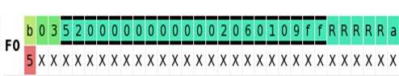
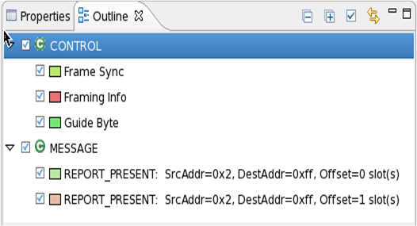
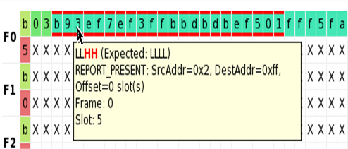

Using the Superframe Viewer
The test method converts the content of the superframe sequence into a sequence of state characters as an intermediate step (see Overview of the SLIMbus solution). You can cause SmarTest to save this state character sequence together with the superframe content it represents in a file with the activateSuperframeViewerOutput() function of the SlimBusController TM API (see SlimBusController). In a multi-site setting, a separate file is generated for every site. One main reason for this is that the test results, which may differ from site to site, are also stored in this file (if it exists).
The files are located in the report directory of the current device. In order to open them go to this directory in the Project Explorer, right-click the file you want to access, select the option Open with, and then Slimbus Superframe Viewer.
The resulting file can be viewed and analyzed with a special tool, the Superframe Viewer. The Viewer displays one superframe at a time. The display unit is one slot, that is, 4 bits. In general, the slot content is displayed as a hexadecimal number. If you place the cursor on a slot, the represented state characters ("0","1" for drive data, and "L","H" for compare data) are shown in a tooltip. Compare slots are distinguished from drive slots by a bold top and bottom border.
There are two exceptions to this hexadecimal representation. Slots that do not contain user data display an "X", corresponding to four times the state character 'X". Slots that are to receive captured data contain an "R", corresponding to four times the mandatory state character for capture actions.
To facilitate interpretation of the state character sequence in terms of SLIMbus messages, state character sequences representing different messages are shown in different colors. The significance of the colors that are used in the current superframe is shown in the Outline window of the Superframe Viewer, where the color coding can also be switched on and off.
If test results exist, these are integrated into the Superframe Viewer file with the decode() function of the SlimBusController API, which must be called prior to any result processing. If this has been done, the display mode of the Superframe Viewer can be switched between expected data and received data. In expected mode, the expected values are displayed in the compare slots, and an "R" in the capture slots. In received mode, the compare slots show the received values. If these are different from the expected values, the bold top and bottom borders are colored red. The details are again shown in the tool tip. The capture slots show the captured values.
Example
Instance of REPORT_PRESENT message in expected mode
Note the five capture slots at the end:

The Outline window for this superframe looks as follows:

This superframe contains two instances of the REPORT_PRESENT message, of which however only one is shown in the previous (and the following) picture.
The following picture shows the same section of the superframe in received mode:

All compare slots have failed bits. The details are displayed for slot 5 in the tooltip. The five capture slots show the captured values.
Functional changes
- Introduced in SmarTest 7.2.1